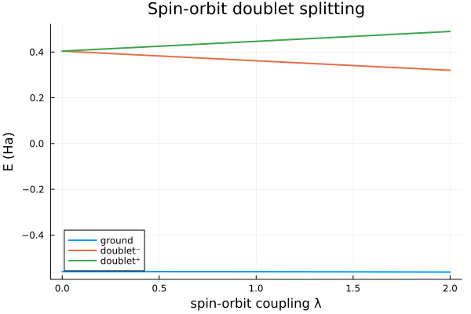
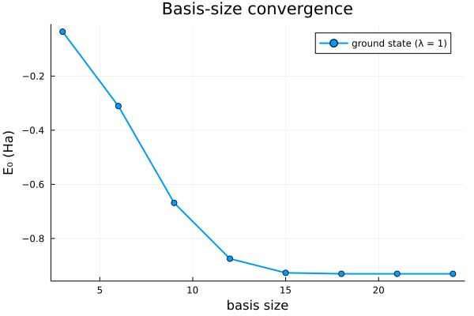

Spin-orbit doublet — the complex Hermitian path
Spin-dependent interactions make the Hamiltonian complex Hermitian, and FewBodyECG assembles and diagonalises it directly. Here two spin-½ particles share a p-wave-like spatial manifold — Gaussians shifted along x, y, z, each dressed with the spin-triplet state |↑↑⟩ — bound by a central Gaussian attraction. A GaussianSpinOrbitOperator couples the relative orbital motion to the total spin S₁ + S₂.
With the coupling off, the two upper orbital states are degenerate. Turning it on lifts the degeneracy: the m_ℓ = ±1 combinations shift in opposite directions, giving a doublet whose splitting grows linearly with the coupling strength — a model fine-structure splitting.
using FewBodyECG
using LinearAlgebra
using Plots
masses = [1.0, 1.0]
ops = Operators(masses)
ops += "Kinetic"
ops += ("Gaussian", 1, 2, -4.0, 0.4) # central binding well
terms = ops.terms
w = only(op.w for op in terms if op isa GaussianOperator)
# p-wave-like manifold: unit-shifted Gaussians along x, y, z with |↑↑⟩ spin
shift(dir) = (v = zeros(1, 3); v[1, dir] = 0.8; v)
basis = BasisSet(
[
SpinGaussian(Rank0Gaussian([0.4;;], shift(d)), SpinState([up, up])) for d in 1:3
]
)
H₀ = build_hamiltonian_matrix(basis, terms) # real, SO-free
Hₛₒ = build_hamiltonian_matrix(basis, FewBodyECG.Operator[GaussianSpinOrbitOperator(1.0, 0.4, w, 1, 2)])
S = build_overlap_matrix(basis)
println("H₀ eltype = ", eltype(H₀), " (spin-orbit-free, real)")
println("Hₛₒ eltype = ", eltype(Hₛₒ), " Hermitian? ", isapprox(Hₛₒ, Hₛₒ'))
# Sweep the spin-orbit strength λ and collect the (real) spectrum
λs = range(0, 2, length = 21)
levels = map(λs) do λ
E, _ = solve_generalized_eigenproblem(H₀ .+ λ .* Hₛₒ, S)
sort(real.(E))
end
spectrum = reduce(hcat, levels)' # rows = λ, columns = levels
# The upper two levels form the spin-orbit doublet; its gap is linear in λ.
gap = spectrum[:, 3] .- spectrum[:, 2]
println("doublet gap at λ = 0, 1, 2: ", round.(gap[[1, 11, 21]], digits = 4))
plot(
λs, spectrum;
xlabel = "spin-orbit coupling λ", ylabel = "E (Ha)",
label = ["ground" "doublet⁻" "doublet⁺"], linewidth = 2,
title = "Spin-orbit doublet splitting",
)
Convergence of the manifold
The three-function manifold above is the minimal one. Enriching each Cartesian direction with a geometric ladder of widths gives a sequence of nested bases, so the ground-state energy (here at fixed coupling λ = 1) descends monotonically toward the variational limit.
αs = exp10.(range(-0.8, 0.6, length = 8)) # fixed ladder ⇒ nested bases
sg(α, d) = SpinGaussian(Rank0Gaussian([α;;], shift(d)), SpinState([up, up]))
λ = 1.0
so = GaussianSpinOrbitOperator(1.0, 0.4, w, 1, 2)
sizes = Int[]
ground = Float64[]
for k in 1:length(αs)
b = BasisSet([sg(α, d) for α in αs[1:k] for d in 1:3])
H = build_hamiltonian_matrix(b, terms) .+ λ .* build_hamiltonian_matrix(b, FewBodyECG.Operator[so])
E, _ = solve_generalized_eigenproblem(H, build_overlap_matrix(b))
push!(sizes, 3k)
push!(ground, minimum(real.(E)))
end
println("converged ground-state energy: ", ground[end], " Ha")
plot(
sizes, ground;
xlabel = "basis size", ylabel = "E₀ (Ha)", label = "ground state (λ = 1)",
marker = :circle, linewidth = 2, title = "Basis-size convergence",
)
This page was generated using Literate.jl.